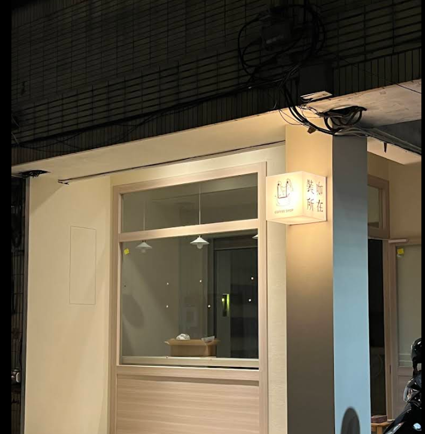
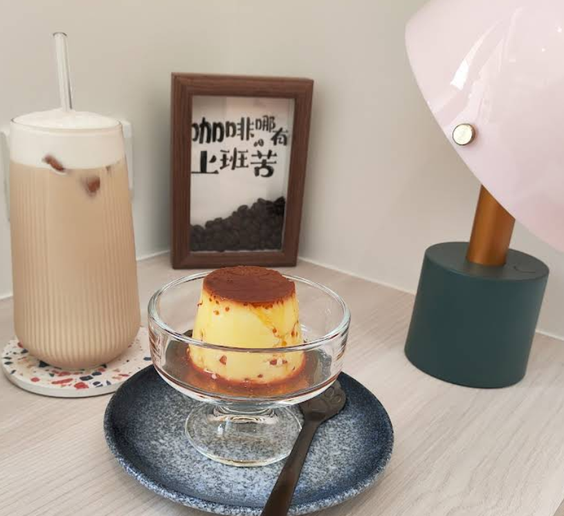

裝咖所在
輕鬆舒服空間，布丁和提拉米蘇都很不錯！
📍 店家資訊
地址：彰化市彰南路二段147巷3號
電話：04-XXXX-XXXX
營業時間：
週一至週日：09:00 - 21:00
社群平台：Facebook、Instagram
🌟 店家特色
裝咖所在是一間氛圍輕鬆舒適的咖啡廳，無論是想要獨自度過悠閒的下午時光，還是和朋友聚會聊天，這裡都是很棒的選擇。店內環境溫馨，讓人感覺很放鬆。
店內的甜點特別受歡迎，布丁口感滑順香甜，提拉米蘇層次豐富，搭配店內精心調製的咖啡，是許多客人的最愛組合。


🍽 推薦餐點
招牌布丁：口感滑順綿密，甜度適中，是店內的人氣甜點，每日新鮮製作，深受客人喜愛。
提拉米蘇：層次豐富的義式經典甜點，咖啡香氣濃郁，搭配馬斯卡彭起司，口感香醇。
手沖咖啡：使用精選咖啡豆，依照客人喜好調整濃淡，每一杯都展現咖啡師的用心。
輕食餐點：提供多樣化的輕食選擇，適合與朋友分享或獨自享用。
離彰師大寶山校區騎車需要: 5 分鐘